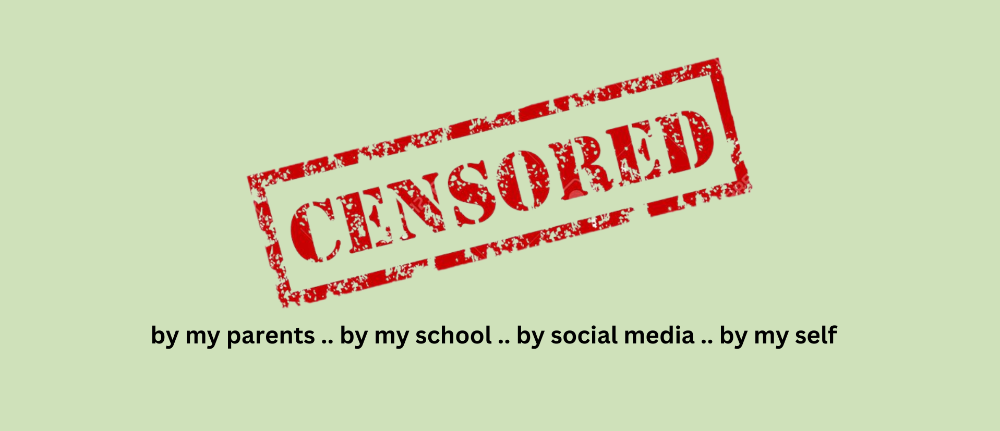

I was censored by ...
Podcast, Social Critique
I was censored by… is a 4 episode podcast series aimed to explore how censorship applies in people’s lives through anecdotes that are shared in each episode. People from different demographics and walks of life were interviewed to get a broader understanding of how censorship manifests in different societies. Issues explored in this series include:
“On this podcast, you’re going to listen to a diverse range of narratives and take on the different ways we’re censored today. From being censored by your parents to school to social media and censoring yourself, we provide a holistic, global take on how and why we are censored through anecdotes, interviews and discussions”.